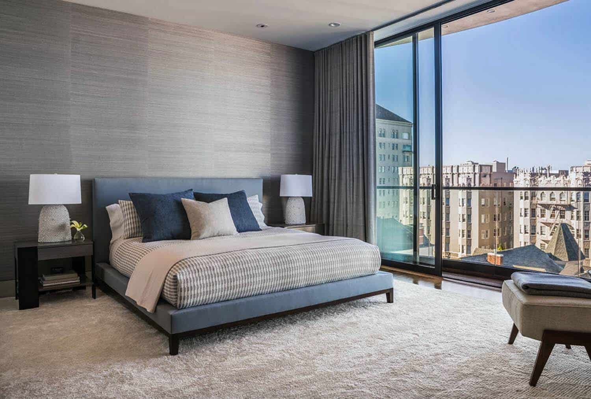

LAYİHƏLƏR
İşıqla formalaşan məkanlar
Fərdi pərdə və jalüz həllərimiz hər layihənin ölçüsünə, işığına və materialına uyğun hazırlanır.
Daha ətraflı →

Fərdi pərdə və jalüz həllərimiz hər layihənin ölçüsünə, işığına və materialına uyğun hazırlanır.
Daha ətraflı →Şəffaf tül, yumşaq tekstura və məxfiliyi təmin edən parçalar məkanın xarakterini müəyyən edir.
Daha ətraflı →
Motorlu sistemlər işıq və məxfiliyi incə, rahat və dəqiq idarə etməyə imkan verir.
Daha ətraflı →